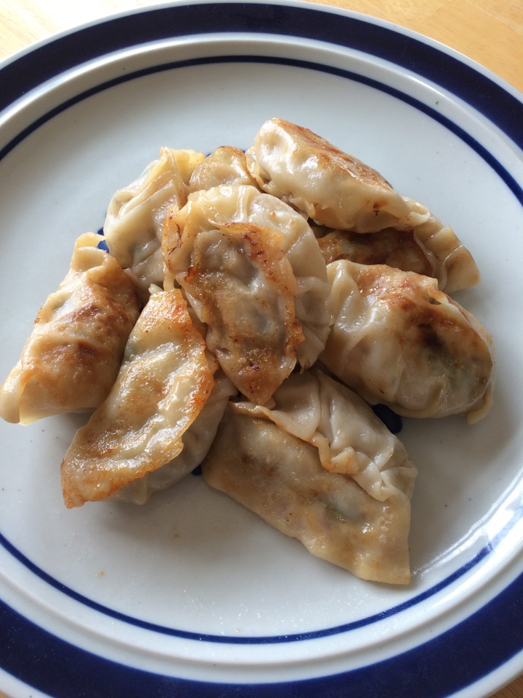
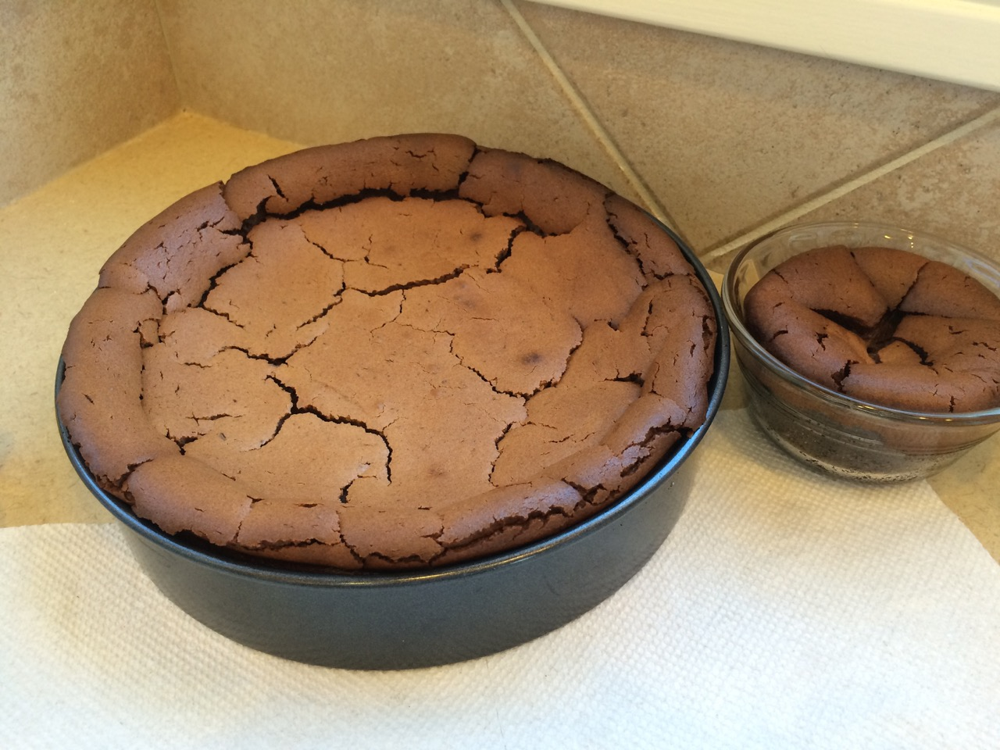

These are some recipes for foods that I've made.
Breakfast
No foods here at the moment.
Lunch/Dinner
- Gyoza
- 1 pound ground sirloin (or half beef, half pork, or try mashed tofu)
- 2 bunches green onions
- about half small head of nappa cabbage (or skip)
- 1 tsp. peeled, grated ginger (mince if you have no grater)
- 2 Tbsp. soy sauce
- 1 Tbsp. sugar
- 1 Tbsp. rice wine (or mirin or skip it)
- (sprinkle of toasted sesame oil)
- 1 package of gyoza skins (rest can be frozen)
- Wash green onions (they can be sandy) and nappa.
- Shake off water and slice thin.
- Mix veggies with meat and seasonings.
- Heat skillet over medium heat.
- Wrap about a heaping tsp. of filling in each skin.
- Wet edges and pinch closed.
- Heat 1-2 tsp. oil in pan.
- Fry on one side until brown (5 min. or so?).
- Turn, then add 1/2 cup water.
- Cover and let steam until done and water is evaporated (5-10 min.)
- Or steam in a steamer.
- Serve with rice and a sauce made from sugar, soy sauce, and rice vinegar.
- Spaghetti
- 1 pound ground sirloin (or Italian sausage or meatballs)
- 1 28 oz. can tomatoes
- 1 can tomato paste
- 1 diced onion
- 1 clove minced garlic
- 1/2 tsp. basil
- 1/2 tsp. thyme
- 1/2 tsp. oregano
- 1/2 tsp. ground sage
- (1/2 tsp. dill)
- 1 tsp. sugar
- 1 bay leaf
- (All measurements are for dried herbs. Use what you have. Use 3 times as much fresh. Only the basil needs to be added at the end.)
- Heat pot over medium heat.
- Add 2 Tbsp. olive oil.
- Saute onion. When soft and translucent, add garlic. Don't brown.
- Add whatever sliced vegetables you want (peppers, mushroom, zucchini).
- (When they are done, pour in 1/4 cup red wine and let the alcohol boil off.)
- Add the tomatoes and their juice, tomato paste, sugar, bay leaf, and herbs.
- Stir in 1 pound browned ground beef (or sliced, cooked Italian sausage -- drain off the fat) for those who want meat.
- Simmer for 30 minutes or longer.
- Serve with cooked spaghetti, grated Parmesan, garlic bread.
Ingredients

Instructions
Serves three or four people.
Ingredients

Instructions
Serves four.
Dessert
- Chocolate Cheesecake
- 1.5 (8 ounce) packages of cream cheese
- 18 Oreos
- 1 Tbsp sugar
- 1/8 tsp cinnamon
- 2 Tbsp melted butter
- 3 ounces semi-sweet chocolate
- 1/2 cup sugar
- 2 eggs
- 1/2 cup whipping cream
- 2 Tbsp sugar
- 1/2 tsp vanilla
- Take out 12 ounces of cream cheese and 2 eggs.
- Preheat oven to 375.
- Scrape all the filling out of the Oreos and process into crumbs.
- Melt 2 Tbsp of butter in the microwave (25 seconds). Process with the cookie crumbs and 1 Tbsp sugar.
- Press into the bottom and sides of an 8" springform pan.
- Bake at 375 for about 7 minutes. Turn oven down to 350.
- Process the cream cheese until smooth. Add sugar and vanilla and mix till smooth.
- Add eggs one at a time, mixing until smooth.
- Whip 1 cup of whipping cream wth 2 Tbsp sugar until soft peaks form.
- Fold half the whipped cream into the cream cheese mixture. Save the rest for serving.
- Pour into crust and bake 1.5 hours.
- Cool in the oven (turned off and door ajar), then chill thoroughly before serving (a couple of hours more).
Ingredients
